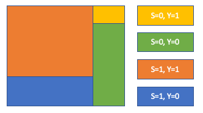
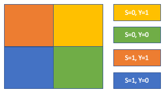
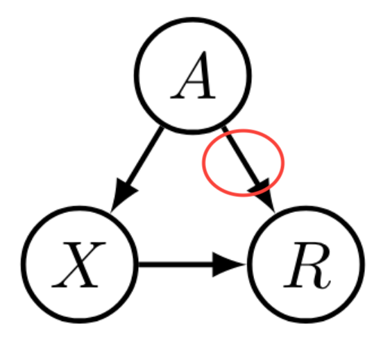
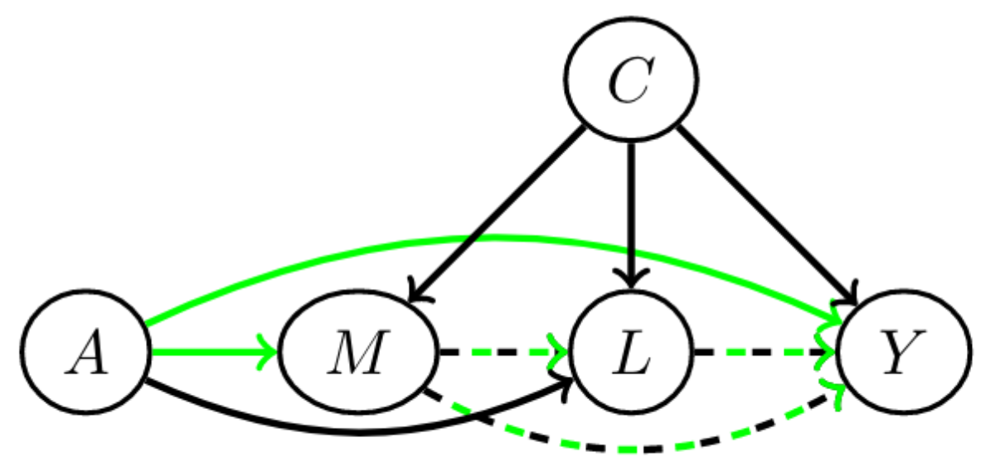
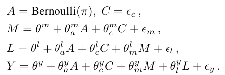
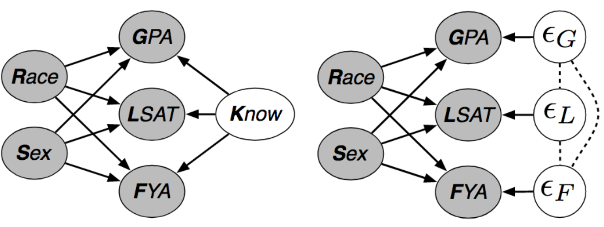

by Oliver Thomas and Thomas Kehrenberg
{ot44,t.kehrenberg}@sussex.ac.uk - Predictive Analytics Lab (PAL), University of Sussex, UK
Alternative idea:
We've seen several statistical definitions and Individual Fairness
There's no right answer, all of the previous examples are "fair". It's important to consult domain experts to find which is the best fit for each problem.
There is no one-size fits all.
In the real world there are implications.
An individual doesn't just cease to exist after we've made our loan or bail decision.
The decision we make has consequences.
| Area | Description |
|---|---|
| Active Harm | Expected change in credit score of an individual is negative |
| Stagnation | Expected change in credit score of an individual is 0 |
| Improvement | Expected change in credit score of an individual is positive |
| Area | Description |
|---|---|
| Relative Harm | Expected change in credit score of an individual is less than if the selection policy had been to maximize profit |
| Relative Improvement | Expected change in credit score of an individual is better than if the selection policy had been to maximize profit |
"If we just remove the sensitive feature, then our model can't be unfair"
This doesn't work, why?
Because ML methods are excellent at finding patterns in data
Pedreschi et al.
Kamiran & Calders determined that one source of unfairness was imbalanced training data.
Simply count the current distribution of demographics
Then either up/down-sample or assign instance weights to members of each group in the training set so that the results are "normalised".
The learned representation is uninterpretable by default. Recently Quadrianto et al constrained the representation to be in the same same as the input so that we could look at what changed
Referred to as "fair pipelines". Work has only just begun exploring these. Current research shows that these don't work (at the moment!)
idea: Let's "disentangle" the sensitive attribute using the variational autoencoder framework!
Louizos et al. 2017
Where $z_1$ and $z_2$ are encouraged to confirm to a prior distribution
Similar to adversarial model, but more principled.
Given we have a loss function, $\mathcal{L}(\theta)$.
In an unconstrained classifier, we would expect to see
$$ \min{\mathcal{L}(\theta)} $$To reduce Disparate Impact, Zafar adds a constraint to the loss function.
$$ \begin{aligned} \text{min } & \mathcal{L}(\theta) \\ \text{subject to } & P(\hat{y} \neq y|s = 0) − P(\hat{y} \neq y|s = 1) \leq \epsilon \\ \text{subject to } & P(\hat{y} \neq y|s = 0) − P(\hat{y} \neq y|s = 1) \geq -\epsilon \end{aligned} $$Constrained optimization problem:
$$\min\limits_\theta\, f(\theta) \quad\text{s.th.}~ g(\theta) = 0$$
This gets reformulated as
$f(\theta) + \lambda g(\theta)$
where $\lambda$ has to be determined, but is usually just set to some value
$$P(y=1|x,s,\theta)=\sum\limits_{\bar{y}\in\{0,1\}} P(y=1|\bar{y},s)P(\bar{y}|x,\theta)$$
For demographic parity:
$P(\bar{y}|s=0)=P(\bar{y}|s=1)$
This allows us to compute $P(y=1|\bar{y},s)$. Which is all we need.
Details: Tuning Fairness by Balancing Target Labels (Kehrenberg et al., 2020)
The usual metrics for Demographic Parity are only defined for binary attributes: it's either a ratio or a difference of two probabilities.
Alternative:
Hirschfeld-Gebelein-Rényi Maximum Correlation Coefficient (HGR)
Motivation:
Example:
Admissions at Berkeley college.
Men were found to be accepted with much higher probability. Was it discrimination?
Was it discrimination?
Not necessarily! The reason was that women were applying to more competitive departments.
Departments like medicine and law are very competitive (hard to get in).
Departments like computer science are much less competetive (because it's boring ;).

If we can understand what causes unfair behavior, then we can take steps to mitigate it.
Basic idea: a sensitive attribute may only affect the prediction via legitimate causal paths.
But how do we model causation?
Solution: build causal graphs of your problem
Problem: causality cannot be inferred from observational data
$A$ is a sensitive attribute, and its direct effect on $Y$ and effect through $M$ is considered unfair. But $L$ is considered admissible.

With a structural causal model (SCM), like this:

You can figure out exactly how each feature should be incorporated in order to make a fair prediction.
Example of a counterfactual statement:
If Oswald had not shot Kennedy, no-one else would have.
This is counterfactual, because Oswald did in fact shoot Kennedy.
It's a claim about a counterfactual world.
$U$: set of all unobserved background variables
$P(\hat{y}_{s=i}(U) = 1|x, s=i)=P(\hat{y}_{s=j}(U) = 1|x, s=i)$
$i, j \in \{0, 1\}$
$\hat{y}_{s=k}$: prediction in the counterfactual world where $s=k$
practical consequence: $\hat{y}$ is counterfactually fair if it does not causally depend (as defined by the causal model) on $s$ or any descendants of $s$.
Example: Law school success
Task: given GPA score and LSAT (law school entry exam), predict grades after one year in law school: FYA (first year average)
Additionally two sensitive attributes: race and gender
Two possible graphs
